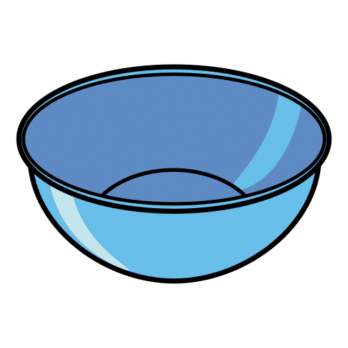
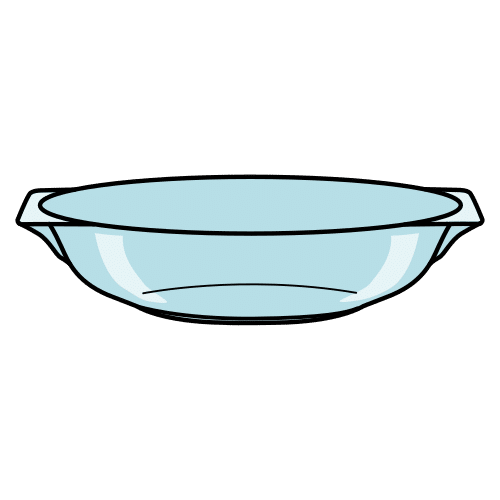
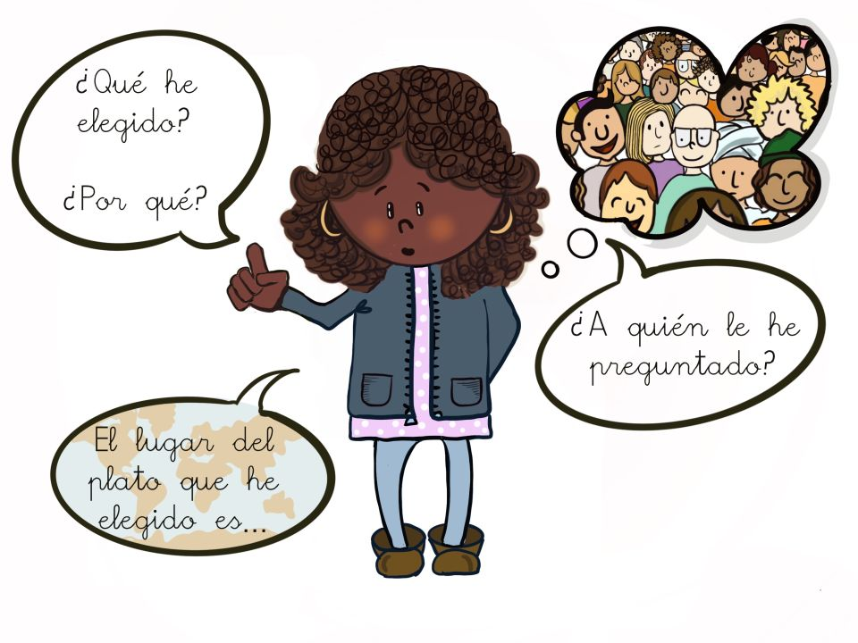
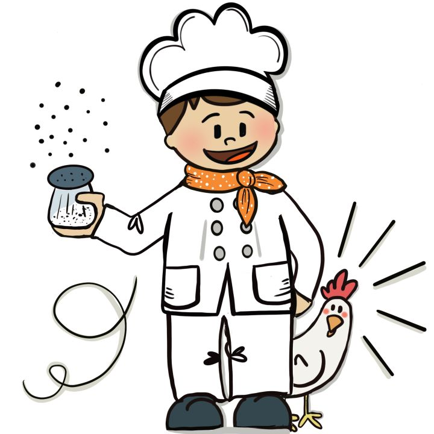

Electrodoméstico que se utiliza para batir y mezclar alimentos.
Ejemplo:
Trituré el tomate con la batidora para hacer salmorejo.
Bol

Definición:
Cuenco sin asas que se utiliza para cocinar.
Ejemplo:
Para hacer el bizcocho mezcle todos los ingredientes en un bol.
Concreto/a
Definición:
Se dice de algo que es preciso y detallado, es simple y no da lugar a dudas.
Ejemplo:
Yo quiero una pelota roja. Mi deseo es muy concreto.
Despistado/a
Definición:
Persona que no sabe lo que pasa o que pone poca atención a las cosas.
Ejemplo:
Luisa es muy despistada, olvidó echar azúcar en el bizcocho.
Entorno
Definición:
Características de un lugar.
Ejemplo:
Aquel entorno era agradable.
Fuente

Definición:
Plato grande y hondo que se utiliza para servir la comida en la mesa.
Ejemplo:
Mi padre puso la ensaladilla rusa en una fuente.
Gastronómico/a
Definición:
Que trata sobre los platos típicos de un lugar.
Ejemplo:
Hicimos un tour gastronómico sobre Andalucía.
Guiar
Definición:
Enseñar a alguien por donde tiene que ir o cómo tiene que hacer algo.
Ejemplo:
Para hacer el bizcocho me guíe por las instrucciones.
Instrucciones
Definición:
Conjunto de reglas o advertencias para algún fin.
Ejemplo:
Las instrucciones para montar la estantería eran complicadas.
Investigar
Definición:
Estudiar un tema en profundidad.
Ejemplo:
Pedro sabe mucho de ese tema porque lo ha investigado a fondo.
Mantener
Definición:
Continuar algo en el tiempo sin cambiar de estado.
Ejemplo:
El médico me recomendó mantener la misma dieta.
Mejorar
Definición:
Hacer que algo sea mejor de lo que era.
Ejemplo:
Desde que desayuno fruta mi salud ha mejorado.
Origen
Definición:
Momento en el que empieza una cosa.
Ejemplo:
El chocolate que probamos era de origen inglés.
Poeta/Poetisa
Definición:
Persona que crea obras poéticas.
Ejemplo:
La poetisa leyó el poema dedicado a su madre.
Trabalenguas
Definición:
Juego de palabras difícil de pronunciar.
Ejemplo:
Mi hermana se compró un libro de trabalenguas.
Tradicional
Definición:
Que se comunica, se transmite o se mantiene de generación en generación.
Ejemplo:
En mi pueblo es tradicional ir en fiestas a comer al campo.
Salud
Definición:
Estado de bienestar físico y mental.
Ejemplo:
Mi abuela tiene muy buena salud, nunca se resfría en invierno.
¿Te has parado a pensar que según el momento del día elegiremos una receta concreta?
No nos apetece comer lo mismo para desayunar que para comer o cenar.
Para realizar estos platos podemos guiarnos por recetas de cocina.
Definición:
Se dice de algo que es preciso y detallado, es simple y no da lugar a dudas.
Ejemplo:
Yo quiero una pelota roja. Mi deseo es muy concreto.
Definición:
Enseñar a alguien por donde tiene que ir o cómo tiene que hacer algo.
Ejemplo:
Para hacer el bizcocho me guíe por las instrucciones.
Lectura facilitada
¿Has pensado que según la hora del día elegimos una receta concreta?
No nos gusta comer lo mismo para desayunar, para comer o para cenar.
Para hacer estos platos utilizamos las recetas de cocina.
Definición:
Se dice de algo que es simple y claro para las personas.
Ejemplo:
Yo quiero una pelota roja. Mi deseo es muy concreto.
Audio
1. ¡A la rica receta!
¿Qué es una receta de cocina?
Una receta de cocina es un conjunto de instrucciones para la elaboración de platos salados o dulces. Estas instrucciones siguen unos pasos que deben estar ordenados.
Partes de una receta de cocina.
Cada receta de cocina tiene las siguientes partes:
Título con el nombre del plato y si quieres, su origen.
Lista de ingredientes, en la que se señala tanto el tipo de ingrediente como la cantidad necesaria del mismo.
Lista de utensilios, es decir, los objetos de cocina que son necesarios para hacer la receta, como batidora, fuente, bol, cuchara…
Las instrucciones para montar la estantería eran complicadas.
Definición:
Momento en el que empieza una cosa.
Ejemplo:
El chocolate que probamos era de origen inglés.
Definición:
Electrodoméstico que se utiliza para batir y mezclar alimentos.
Ejemplo:
Trituré el tomate con la batidora para hacer salmorejo.
Definición:
Plato grande y hondo que se utiliza para servir la comida en la mesa.
Ejemplo:
Mi padre puso la ensaladilla rusa en una fuente.
Definición:
Cuenco sin asas que se utiliza para cocinar.
Ejemplo:
Para hacer el bizcocho mezcle todos los ingredientes en un bol.
Audio
¿Sabías qué...?
Aunque podemos hacer recetas con cualquier alimento no todas son saludables.
Las recetas saludables son las que sirven para cocinar platos que nos ayudan a mantener y mejorar nuestra salud. Es decir, las que nos ayudan a estar sanos y sanas, sentirnos bien y tener energía.
Un truco es tomar alimentos variados, y no tomar muchas grasas o azúcar.
Te muestro una guía para hacer un plato saludable:
Definición:
Continuar algo en el tiempo sin cambiar de estado.
Ejemplo:
El médico me recomendó mantener la misma dieta.
Definición:
Hacer que algo sea mejor de lo que era.
Ejemplo:
Desde que desayuno fruta mi salud ha mejorado.
Definición:
Estado de bienestar físico y mental.
Ejemplo:
Mi abuela tiene muy buena salud, nunca se resfría en invierno.
2. Mapa gastronómico de la clase
En cada lugar hay recetas muy conocidas entre las personas que viven ahí. ¿Conocéis platos tradicionales del lugar donde vivís o dónde habéis nacido?
Vais a investigar en vuestro entorno platos tradicionales de vuestro lugar de nacimiento o del de vuestros familiares. Seleccionad, al menos, una receta y llevadla a clase para compartirla escrita o a través de un audio o un vídeo.
En asamblea vais a presentar al resto de la clase la receta que habéis investigado.
Primero
Di qué nombre tiene, quién te ha ayudado con la investigación, de dónde es y por qué la has elegido.

Segundo
Indica los ingredientes que lleva, dificultad que tiene, utensilios necesarios para prepararla, tiempo de preparación y para cuántas personas es.
Tercero
Modo de preparación. Explica cada paso que hay que dar para hacer la receta.
Cuando hayáis explicado todas vuestras recetas al resto de vuestros compañeros y compañeras, vais a hacer el “Mapa gastronómico de la clase”.
Para hacerlo, en un mapa donde salgan todos los lugares que han aparecido al hablar de las recetas típicas, podéis añadir un dibujo del plato o su nombre escrito pegándolo en su lugar correspondiente.
Definición:
Que se comunica, se transmite o se mantiene de generación en generación.
Ejemplo:
En mi pueblo es tradicional ir en fiestas a comer al campo.
Definición:
Estudiar un tema en profundidad.
Ejemplo:
Pedro sabe mucho de ese tema porque lo ha investigado a fondo.
En asamblea, presentad vuestra receta al resto de la clase.
Podéis presentarla por escrito, audio o vídeo.
Seguid estos pasos:
Primero
Di el nombre de la receta y su origen.
Indica quién te ha ayudado a investigar esa receta.
Explica porque la has elegido.
Segundo
Indica los ingredientes que necesita la receta.
Nombra si es fácil o difícil hacer esa receta.
Explica qué utensilios son necesarios para hacer la receta.
Di cuál es el tiempo que necesitas para preparar esta receta.
Indica para cuántas personas es la receta.
Tercero
Explica todos los pasos necesarios para hacer la receta.
Cuando terminéis de explicar vuestras recetas a toda la clase vais a hacer el “Mapa gastronómico de la clase”.
Para hacer la actividad podéis utilizar un mapa donde salgan todos los lugares que habéis nombrado.
Podéis poner el dibujo del plato o el nombre de la receta escrito poniéndolo en el lugar correspondiente.
Definición:
Que se comunica, se transmite o se mantiene de generación en generación.
Ejemplo:
En mi pueblo es tradicional ir en fiestas a comer al campo.
Definición:
Estudiar un tema en profundidad.
Ejemplo:
Pedro sabe mucho de ese tema porque lo ha investigado a fondo.
Definición:
Características de un lugar.
Ejemplo:
Aquel entorno era agradable.
Definición:
Que trata sobre los platos típicos de un lugar.
Ejemplo:
Hicimos un tour gastronómico sobre Andalucía.
Audio
Motus dice Aprender de los errores
¿Te has equivocado en algo al hacer la actividad?
Cuando queremos aprender algo, lo normal es equivocarse al principio. Fallar forma parte de aprender. ¿Recuerdas cuando intentabas nadar en el agua? Seguro que al principio no fue fácil, pero cada vez que fallabas, lo intentabas de nuevo. Con cada fallo aprendemos del error y lo mejoramos para la vez siguiente.
Para aprender de tus errores sigue estos consejos:
Me doy cuenta de en qué parte he fallado.
Busco la forma de mejorar ese error.
Lo intento de nuevo.
Entiendo que el error es importante para aprender.
No lo olvides: cuando te equivocas una vez, aprendes para el siguiente intento.
3. Ahora ponlo en práctica
Es el turno del ejercicio individual de este bloque.
Ahora que ya sabes qué es una receta y las partes que tiene, vamos a practicar.
Elige la opción con la que te sientas más cómoda o cómodo.
¡Ánimo!
Opción A: Ordenando una receta
Esta receta está totalmente desordenada, ¿puedes ayudar a Rétor? Arrastra cada nombre con la parte de la receta a la que corresponda.
Opción B: El ayudante de Rétor
En la cocina de Rétor hay un nuevo ayudante. Para saber si está listo para formar parte de su equipo, le van a hacer unas preguntas. ¿Te atreves a responderlas? Indica en cada caso si estas afirmaciones son verdaderas o falsas.
Retroalimentación
Verdadero
Retroalimentación
Falso
Retroalimentación
Verdadero
Retroalimentación
Verdadero
Retroalimentación
Falso
Opción C: Lío en la cocina
¡Qué lío hay en la cocina! Se han mezclado las recetas saludables y no saludables… ¿Puedes ayudar a Rétor?
Coloca cada receta en el apartado que corresponda según sea saludable o no saludable.
Opción D: Cambios saludables
¿Se te ocurre una forma saludable de hacer esta receta para cuatro personas? Piensa bien los alimentos, ¡seguro que eres capaz!
Las recetas de cocina dan mucho juego. Seguro que conocéis canciones, trabalenguas o dichos que hablen de comida o recetas de cocina.
¿Conocéis a Gloria Fuertes? Es una poetisa muy conocida. Te animo a investigar sobre ella.
En este poema nos cuenta una aventura de un cocinero un tanto despistado. ¿Quieres saber qué le pasó al tal Fernando?
El cocinero distraído (Gloria Fuertes)
El cocinero Fernando
Se pasaba el día pensando
—sin pensar en lo que hacía—
Se le olvida echar la sal,
Nunca pela las patatas.
Y le sale el guiso mal.
La paella sin arroz.
¡Qué atroz!
Lo peor fue el otro día…
Encerrado en la cocina,
Peló viva a una gallina
Y en el horno la metió…
Pasó un rato
Y la gallina gritó temblando:
—Fernando, Fernando,
o enciendes el horno
o me pones las plumas
¡que me estoy helando!

No sólo poetas y poetisas se han atrevido con las recetas de cocina. Hay cuentos, películas, canciones e incluso pintores y pintoras que han hecho cuadros de pintura famosos con platos de comida.
Seguro que habéis oído hablar sobre “Ratatouille”, “Charlie y la fábrica de chocolate” o “Lluvia de albóndigas”.
Podéis investigar en grupo nombres de películas, cuentos, pinturas, canciones o esculturas que traten sobre recetas de cocina o platos de comida.
Definición:
Juego de palabras difícil de pronunciar.
Ejemplo:
Mi hermana se compró un libro de trabalenguas.
Definición:
Persona que crea obras poéticas.
Ejemplo:
La poetisa leyó el poema dedicado a su madre.
Definición:
Persona que no sabe lo que pasa o que pone poca atención a las cosas.
Ejemplo:
Luisa es muy despistada, olvidó echar azúcar en el bizcocho.


 ¿Te has parado a pensar que según el momento del día elegiremos una receta
¿Te has parado a pensar que según el momento del día elegiremos una receta ![En la imagen aparece la receta de la “Ensalada Caprese”. Al principio aparecen los ingredientes: tomate, albahaca, queso caprese, vinagre, aceite, hierbas aromáticas, sal y pimienta. A continuación los utensilios necesarios para realizarla: tabla, plato, bol, cuchillo y cuchara. Luego, paso a paso, con dibujos y palabras cómo se elabora: se lavan los ingredientes, se ponen bien cortados sobre el plato, con sal, pimienta, aceite, vinagre y algunas hierbas aromáticas. Por último dos apartados, uno para el tiempo que se emplea en su elaboración, diez minutos, y otro para la dificultad de elaboración, en este caso, solo un nivel de dificultad.](IMG_05_4.1_2_1.1.jpg "Infografía de una receta de cocina")


_1.jpg "Plato saludable")
 En cada lugar hay recetas muy conocidas entre las personas que viven ahí. ¿Conocéis platos
En cada lugar hay recetas muy conocidas entre las personas que viven ahí. ¿Conocéis platos